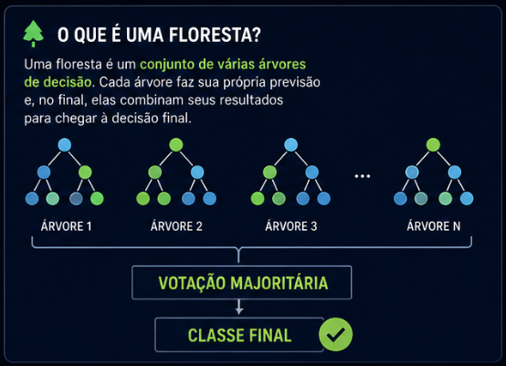
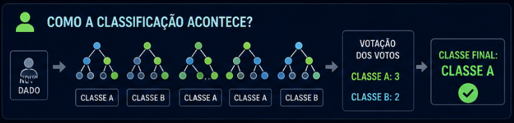
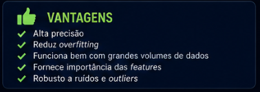
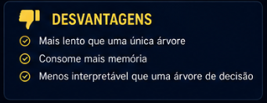
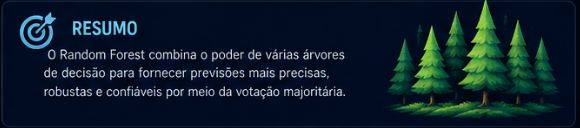

🌳 Random Forest
Aprendizado com múltiplas árvores
🔍 slide com melhor explicação🌲 O que é uma floresta?

- Várias árvores de decisão
- Cada uma aprende separadamente
- Resultado final por votação
⚙️ Como funciona?

- Bootstrapping
- Criação das árvores
- Treinamento independente
- Votação
🗳️ Classificação

- Cada árvore faz uma previsão
- As previsões são comparadas
- A mais votada vence
📊 Importância das Features

- Identifica variáveis importantes
- Baseado na separação dos dados
- Ajuda na interpretação
✅ Vantagens

- Alta precisão
- Menos overfitting
- Robusto
❌ Desvantagens

- Mais lento
- Mais pesado
- Difícil de interpretar
🎤 Resumo

Várias árvores + votação = decisão mais confiável